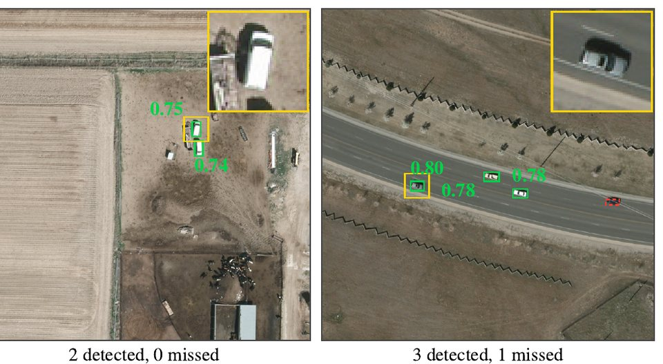
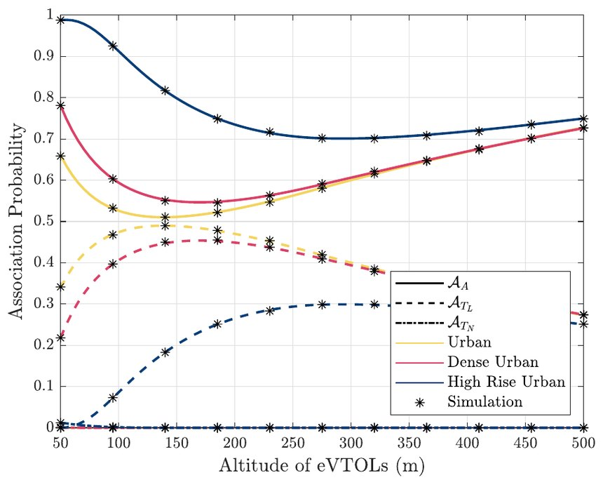

Desert search and rescue with high-altitude platforms and drones
Python, PyTorch, YOLO. 3rd place out of 81, International Research Competition for Non-Terrestrial Networks, 2026.

Detections at the resolution of a HAPS camera, 18 cm per pixel. Green boxes are vehicles the detector found; the red box is one it missed.
A vehicle stranded deep in a desert usually carries no radio beacon and is out of network coverage, so rescuers have a very large area to search. We proposed a search in layers: high-altitude platform stations (HAPS) in the stratosphere scan a wide area with optical cameras and detect vehicles, drones fly out to confirm each candidate, and non-terrestrial links connect the platforms to the rescue coordinators.
I coupled a YOLO detector, fine-tuned on aerial images degraded to the resolution of a HAPS camera, with a network simulator, and compared mission and transmission policies under GEO and LEO link budgets against a search by ground teams. The limit is not detection but getting the imagery to the people who make decisions. Processing the images on board cuts the satellite capacity needed by about 40 times, and sending drones only to the candidates cuts their flying by 88%.
A. Abu Zaid, B. E. Y. Belmekki, M.-S. Alouini, “AI-Enabled Multi-Layer NTN for Rapid Target Acquisition in Desert Search and Rescue,” International Research Competition for Non-Terrestrial Networks, CST and IEEE, 2026.
Stochastic geometry and simulation. Subject of my Four Minute Thesis talk, 3rd place at IEEE ICC 2025.

Probability that an aircraft connects to an aerial base station (solid lines) or to a terrestrial one in line of sight (dashed), against its altitude, in three kinds of city. Stars are simulations. From [2], CC BY 4.0.
Air taxis fly along fixed corridors above a city, served by aerial base stations above the corridors and by terrestrial base stations with their antennas tilted upwards. The paper calculates how likely an aircraft is to connect to each kind of base station, and how likely its link is to work in both directions, uplink and downlink, and checks the math against simulation.
Low down, buildings block most links to the ground, so aircraft connect mostly to aerial base stations; as they climb they can reach terrestrial ones in line of sight. Choosing the base station by the strongest average signal does not always give the best coverage, because the uplink and the downlink work best with different settings.
A. Abu Zaid, B. E. Y. Belmekki, M.-S. Alouini, “Aerial-Terrestrial Heterogeneous Networks for Urban Air Mobility: A Performance Analysis,” IEEE Open Journal of Vehicular Technology, vol. 6, pp. 912–926, 2025. [2]
“Decoupled Downlink-Uplink Aerial-Terrestrial Heterogeneous Networks for Urban Air Mobility,” under review, IEEE International Conference on Communications (ICC), 2027. [5]
The line-of-sight model most often used for aerial links depends only on the elevation angle, so it gives a vehicle the same chance of a clear link to an aircraft above the road as to one above buildings. Our model adds a street term that applies when the aircraft is close to the road. We fitted it to ray tracing of urban, dense urban, and high-rise cities, and validated it against 3D building models of Dubai, Jeddah, and Chicago.
For an aircraft 150 m above a road, the usual model underestimates the interference from the vehicles below by up to 4.71 dB in high-rise areas. The results suggest running air corridors parallel to streets but at a distance from them.
A. Abu Zaid, B. E. Y. Belmekki, M.-S. Alouini, “Extended Road-Aware Line-of-Sight Probability Model for Urban Air Mobility,” IEEE Transactions on Aerospace and Electronic Systems, vol. 61, no. 5, pp. 15014–15020, 2025. [1]
A. Abu Zaid, B. E. Y. Belmekki, M.-S. Alouini, “Urban Air Mobility Communications: Coverage Analysis and Corridor Design,” ICAO Global Advanced Air Mobility Academic Paper Competition, 2024. Best Paper Award.
A line-of-sight model for non-terrestrial coverage of urban air mobility
3rd place, IEEE Future Networks 6G and NTN contest, 2023.
A new line-of-sight probability model, used to analyze how non-terrestrial networks can provide coverage for urban air mobility. Presented at an IEEE Future Networks webinar on 20 December 2023.
A. Abu Zaid, B. E. Y. Belmekki, M.-S. Alouini, “NTN for Urban Air Mobility Coverage: A Novel Probability of Line-of-Sight Model,” IEEE Future Networks 6G and NTN: Challenges and Solutions contest, 2023.
Sets out what electric air taxis need from a network, the technologies that could deliver it, and a case study comparing terrestrial and aerial infrastructure.
A. Abu Zaid, B. E. Y. Belmekki, M.-S. Alouini, “eVTOL Communications and Networking in UAM: Requirements, Key Enablers, and Challenges,” IEEE Communications Magazine, vol. 61, no. 8, pp. 154–160, 2023. [3]
Python and MATLAB simulation on the Ibex HPC cluster. Poster at IEEE EuCNC & 6G Summit 2022.
Compares tethered flying platforms with roadside units for connecting vehicles, and ends in two tables that tell a designer which platform and transmission scheme suit a given situation.
A. Abu Zaid, B. E. Y. Belmekki, M.-S. Alouini, “Aerial-Aided mmWave VANETs Using NOMA: Performance Analysis, Comparison, and Insights,” IEEE Transactions on Vehicular Technology, vol. 73, no. 4, pp. 4742–4758. First published 2023. [4]
Large language models and retrieval-augmented generation.
Developing AI pipelines for a Saudi-based EdTech startup, using large language models and retrieval-augmented generation for personalized, curriculum-focused learning across several subjects. The work covers data retrieval, prompt engineering, and integration with educational content.
AWS
Serverless LLM application on AWS
AWS Lambda, Amazon S3, API integration.
A serverless application that calls large language models through an API for interactive use. The backend runs on AWS Lambda and handles model queries and responses, and the frontend is hosted on Amazon S3. The design leaves room to add retrieval-augmented generation later.
PyTorch
House number recognition with convolutional neural networks
Python, PyTorch, VGG16, SVHN dataset.
A convolutional neural network system that detects and classifies the digits in photos of house numbers with varied backgrounds, scales, and orientations. It uses a sliding-window recognition pipeline, compares a custom network with a pre-trained VGG16, and was validated on the SVHN dataset.
Earlier projects
2020
Congestion control for wireless sensor networks using reinforcement learning
Senior design project, BSc in Electrical Engineering, University of Jordan. ns-3.
Proposed an algorithm, built on the IEEE 802.15.10 routing standard, that uses reinforcement learning to ease congestion in wireless sensor networks, and simulated it in the ns-3 network simulator.
2019
Cryptosystems in Python and SageMath
IAESTE research internship, Mathematics Department, University of Lleida, Spain.
Implemented cryptosystems including RSA and discrete-logarithm schemes in Python and SageMath.
2018
Cognitive radio network simulators
C++, MATLAB.
A C++ framework that simulates a cognitive radio network, with a MATLAB interface for plotting throughput, channel utilization, false alarms, and missed detections, and a second simulator for testing a new rendezvous algorithm.